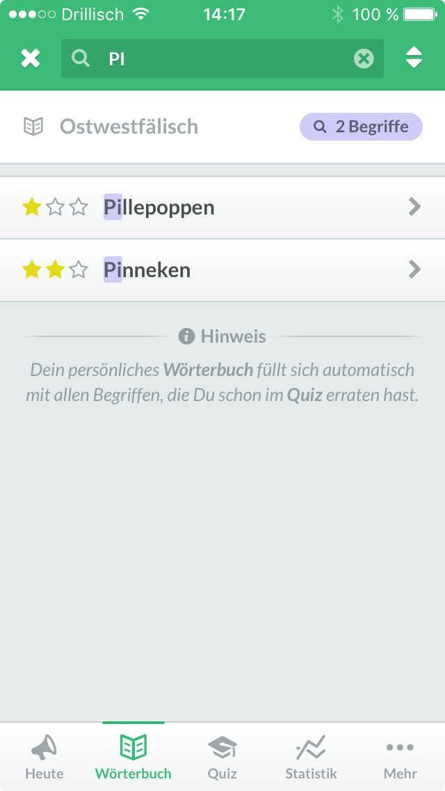
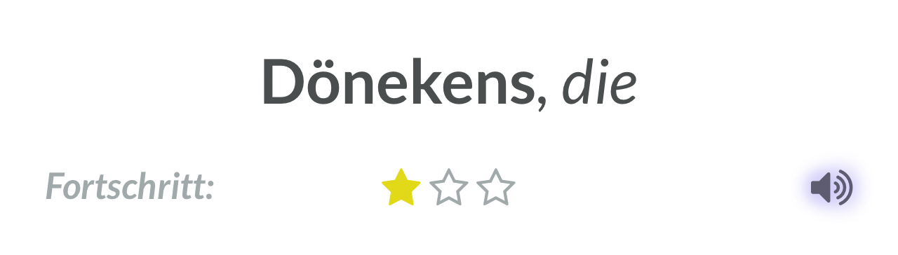
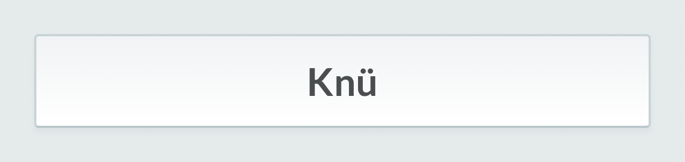
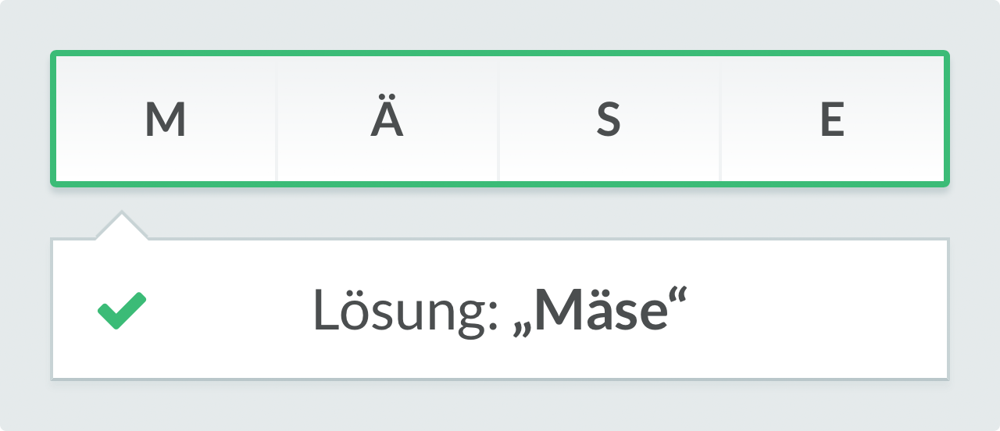

Einleitung & Zielsetzung
Im nachfolgenden werden die Motivation, Zielsetzung und der Aufbau der vorliegenden Bachelorarbeit erläutert.
Vorgeschichte & Motivation
Im Zuge des Seminars Mobile Learning im Wintersemester 2015/16 an der Universität Bielefeld unter Leitung von Paul John war ich, zusammen mit sieben weiteren Studierenden, an der Konzeption, Gestaltung und Umsetzung einer Lern-App für Dialektwörter aus Ostwestfalen-Lippe beteiligt. Dabei entstand ein erster funktionsfähiger Prototyp der App OWLisch, an dessen Programmierung ich maßgeblich mitgewirkt habe.
Bereits beim Entwickeln dieser ersten rudimentären Version habe ich einen tieferen Einblick sowohl in die Programmierung von Web-Apps mit der Programmiersprache JavaScript, als auch in die didaktische Konzeption einer solchen Lern-App erhalten. Mit dieser Arbeit wollte ich noch einen Schritt weiter gehen und aus der bereits bestehenden Idee ein fertiges Produkt erstellen, das auf aktuellen Technologien basiert und mein Verständnis für die damit verbundenen Programmiersprachen und Konzepte vertieft.
Zielsetzung
Das Ziel dieser Arbeit war es, eine lauffähige iOS-Version von OWLisch zu entwickeln. Dabei sollte die App von Grund auf neu programmiert werden; ich entschied mich allerdings dazu, die App nicht in der von Apple kreierten Programmiersprache Swift zu entwickeln, sondern einen Hybrid-Ansatz zu wählen, um größtmögliche Flexibilität zu erreichen.
Dabei wollte ich auf etablierte Web-Technologien wie JavaScript, HTML und CSS zurückgreifen und diese mit dem Framework Apache Cordova kombinieren. Dies erlaubt es, eine so erstellte App nicht nur in jedem modernen Web-Browser auszuführen, sondern diese auch mit geringem Aufwand zu einer nativen iOS- oder sogar Android-App zu konvertieren, ohne den Programmcode für jede Plattform neu schreiben zu müssen.
Der eigentliche Inhalt und das Konzept des bestehenden Prototyps sollten dabei nur geringfügig verändert oder erweitert werden; die in dieser Arbeit enthaltene Beschreibung der Konzeption und Gestaltung stimmen daher größtenteils mit der Vorgängerversion überein.
Aufbau der Arbeit
Diese Arbeit beschäftigt sich zunächst mit der grundlegenden Idee, der Funktionsweise, dem Aufbau und dem zugrunde liegenden didaktischen Konzept der App OWLisch. Nachfolgend wird die grafische Gestaltung der App näher beleuchtet und im Detail beschrieben, wobei ein Vergleich zu den iOS Human Interface Guidelines gezogen und eine erste Verbindung zum dazugehörigen Quellcode hergestellt wird.
Im nächsten Kapitel des Hauptteils wird die eigentliche Programmierung der App näher beschrieben; dabei werden die eingesetzten Technologien und Bibliotheken, der modulare Aufbau des Programms und die verwendeten Programmiermuster in der Sprache JavaScript präsentiert. Das letzte Kapitel fasst die Arbeit zusammen und gibt einen Ausblick auf eine mögliche Fortsetzung des Projekts.
Idee & Konzept der App
Nachfolgend wird die Idee der App, die Funktionsweise und das dahinter liegende didaktische Konzept erläutert.
Entstehung der Idee
Die Idee für die App OWLisch entstand im Zuge des Seminars Mobile Learning unter Beteiligung folgender Studierenden: Tugba Aksakal, Miriam Belke, Melanie Derksen, Franziska Kluge, Lisa Kottmann, Kai-Frederik Lüking, Jakob Metzger und Philipp Niewöhner. Ziel war es zunächst, ein Konzept für eine Lern-App für Dialektwörter aus Ostwestfalen-Lippe unter Berücksichtigung von didaktischen Erkenntnissen zu entwickeln; zu diesem Zweck wurden während des Seminars interdisziplinäre Gruppen aus verschiedenen Studiengängen gebildet (Medienwissenschaften, Erziehungswissenschaften und Medieninformatik & Gestaltung).
Als Inspiration für die App dienten in erster Linie die bekannte Spiele-App Quizduell und das althergebrachte Karteikartensystem zum Lernen von Vokabeln. Bei mehreren Gruppendiskussionen wurden diese Beiden Konzepte vereint und konkretisiert.
Um das Lernen der ostwestfälischen Vokabeln aufzulockern, wurde ein sogenannter Gamification-Ansatz gewählt – das Anwenden spieltypischer Elemente in einem sonst spielfremden Kontext – in Anlehnung an die App Quizduell. Die in der App enthaltenen Begriffe sollten als ein Quiz präsentiert werden, das über mehrere Schwierigkeitsstufen verfügt und den Spieler bei richtigen Antworten mit einem kleinen Erfolg belohnt.
Im Hintergrund, für den Spieler weitestgehend unsichtbar, sollte ein einfaches Karteikartensystem implementiert werden; Begriffe, die falsch erraten werden, sollten häufiger im Quiz auftauchen und so in den Vordergrund rücken, bis der Spieler die entsprechende Frage richtig beantwortet.
Features & Funktionen
Nachdem die Kernidee der App ausformuliert wurde, konnten konkrete Funktionalitäten erdacht und skizziert werden. Im Fokus stand dabei zunächst das Quiz als Hauptbestandteil der App; dieses sollte über mehrere Quiz-Typen verfügen, die verschiedene Schwierigkeitsgrade darstellen und dem Spieler sowohl Abwechslung, als auch eine Herausforderung bieten.
Das Quiz
In der ersten und leichtesten Stufe wird dem Spieler zunächst eine simple Multiple-Choice-Frage über einen Begriff mit vier Antwortmöglichkeiten präsentiert. Dies ermöglicht es dem Spieler, durch einfaches Raten auf die richtige Lösung zu kommen. Dieser Typ teilt sich wiederum in vier Sub-Typen auf:
- Ein ostwestfälischer Begriff mit vier hochdeutschen Begriffen als Antwortmöglichkeit (z.B. „Was heißt Pinneken?“).
- Ein hochdeutscher Begriff mit vier ostwestfälischen Begriffen als Antwortmöglichkeit (z.B. „Was heißt Schnapsglas?“).
- Ein ostwestfälischer Begriff mit vier Bildern als Antwortmöglichkeiten (z.B. „Was heißt Schnapsglas?“) siehe Abbildung 1.
- Ein Bild zu einem Begriff mit vier ostwestfälischen Begriffen als Antworten siehe Abbildung 2.

Wireframe: Quiz-Typ
Begriff zu Bilder

Wireframe: Quiz-Typ
Bild zu Begriffen
Diese vier Typen sollten dabei jedes Mal zufällig ausgewählt werden. Die Bilderrätsel lockern dabei einerseits die sonst stark textbasierte App auf und unterstützen andererseits visuelles Lernen und können dem Spieler so eine zusätzliche Erinnerungsstütze bieten, wenn der entsprechende Begriff noch einmal im Quiz auftaucht.
Wird ein Begriff während dieser ersten Stufe richtig erraten, steigt der Spieler für diesen um eine Stufe auf und erhält beim nächsten Vorkommen einen neuen Schwierigkeitsgrad. Bei dieser zweiten Stufe wird dem Spieler die hochdeutsche Übersetzung des Begriffs präsentiert, während alle im ostwestfälischen Wort vorkommenden Buchstaben zufällig gemischt dargestellt sind und in die richtige Reihenfolge gebracht werden müssen.

Wireframe: Quiz-Typ
Begriff zu Buchstaben
Wireframe: Quiz-Typ
Begriff zu Eingabe
Hierdurch soll der Spieler die korrekte Schreibweise des Begriffes erlernen, erhält durch die Vorgabe der Buchstaben allerdings weiterhin eine Hilfestellung, sodass die Lösung durch Knobeln und ausprobieren erreicht werden kann. Über einen vorhandenen „Lösen“-Button kann die Eingabe bestätigt werden siehe Abbildung 3.
Die letzte und somit schwierigste Stufe ähnelt ihrem Vorgänger; auch hier wird die hochdeutsche Übersetzung dargestellt, es entfällt jedoch die Hilfestellung. Der Spieler muss den ostwestfälischen Begriff selbstständig mittels einer eingeblendeten Tastatur korrekt eingeben. Kommt ein Spieler hier auf die richtige Lösung, so wurde der Begriff erfolgreich erlernt siehe Abbildung 4.
Das Wörterbuch
Ein weiteres geplantes Feature für die App ist das persönliche Wörterbuch des Spielers. Hier sollen automatisch alle Begriffe hinzugefügt werden, die im Quiz richtig erraten wurden; so kann der Nutzer bereits kennengelernte Begriffe erneut nachschlagen und zusätzliche Information darüber erhalten.
Das Wörterbuch verfügt sowohl über eine Übersichtsliste aller Begriffe siehe Abbildung 5, als auch über Detailansichten, die vorhandene Bilder und Herkünfte, Zitate und Übersetzungen über den Begriff enthalten siehe Abbildung 6. Zusätzlich soll hier eine auditive Komponente ergänzt werden, indem alle Begriffe als eingesprochene Audiodateien im Wörterbuch abgespielt werden können, sodass der Nutzer die korrekte Aussprache der Wörter lernen kann.

Wireframe: Wörberbuch-Übersicht
Wireframe: Wörterbuch-Details
Begriff des Tages
Um dem Nutzer beim Starten der App einen ersten Eindruck über die Inhalte zu verschaffen und nicht sofort in einen der Menüpunkte zu werfen, kam die Überlegung auf, den Begriff des Tages als Startbildschirm einzusetzen.
Dieser Bildschirm präsentiert dem Nutzer einen der in der App vorhandenen Begriffe mitsamt Bild, Übersetzung und Informationstext (ähnlich wie bei den Wörterbuch-Details), sodass man bereits vor dem ersten Spielen des Quiz ein neues Wort kennenlernen kann siehe Abbildung 7. Dieser Begriff wird täglich zufällig gewechselt und kann dem Nutzer somit sowohl bereits bekannt, als auch völlig neu sein. Gelernte Begriffe können so noch einmal aufgefrischt werden, sodass sie beim nächsten Spiel einfacher zu lösen sind.
Wireframe: Begriff des Tages

Wireframe: Statistik des Nutzers
Die Statistik
Damit der Nutzer der App zu jeder Zeit einen Überblick über den bisher erzielten Lernfortschritt behält, wurde beschlossen, eine persönliche Statistik zu implementieren, in der über Diagramme wichtige Informationen dargestellt werden siehe Abbildung 8.
Hier erhält man Einsicht in die erzielten Punkte aus den letzten Quiz-Spielen, die Anzahl der bisher gelernten Begriffe in Relation zur Gesamtzahl der Begriffe und eine Aufschlüsselung der aktuellen Stufen der gelernten Begriffe. Auf diese Weise soll dem Nutzer der Fortschritt visuell vor Augen geführt werden, sodass ersichtlich ist, was bereits erreicht wurde und wie viel noch fehlt, bis alle Begriffe erfolgreich erlernt wurden.
Die Hilfe
Da trotz sorgfältiger Überlegungen hinsichtlich der Inhalte und Funktionsweisen der App beim Nutzer dennoch Fragen zur Bedienung aufkommen können, sollte zusätzlich noch ein ausführlicher Hilfetext in der App untergebracht werden. Hier sollen die wesentlichen Funktionen vom Quiz, dem Wörterbuch und der Statistik verständlich erklärt werden.
Wörterbuch ändern
Es kam bereits während der Planungsphase die Idee auf, die App nicht nur auf Ostwestfälische Begriffe zu beschränken, sondern auch andere deutsche Dialekte zu unterstützen. Dieses Feature wurde zwar bei der Entwicklung des ersten Prototypen verworfen, bei der finalen Umsetzung jedoch wieder aufgegriffen; näheres dazu findet sich in Kapitel 3 und Kapitel 4.
Layout & Navigation
Nachdem geklärt war, welche Grundfeatures die App enthalten soll und wie diese in etwa gestaltet sein sollten, musste das Konzept noch um eine Navigation und Inhaltsstruktur erweitert werden. Aufgrund der vorhandenen persönlichen Geräte und der bereits gemachten Erfahrungen der Gruppenmitgliedern mit unterschiedlichen Smartphones und Betriebssystemen, wurde iOS als Zielplattform für den ersten Prototypen ausgewählt, mit dem iPhone 5 (und später dem iPhone SE) als Testgerät.
Als primäre Quelle für das grundlegende Layout und die
Navigationsstruktur der App wurden die iOS Human Interface
Guidelines
Vgl. Apple Inc. (2016): iOS Human Interface Guidelines.
https://developer.apple.com/ios/human-interface-guidelines
(15.12.2016)
herangezogen; hier sind
sämtliche von Apple empfohlenen Interface-Elemente für Apps
dokumentiert und beschrieben. Das Einhalten von Richtlinien und
Empfehlungen ist beim Entwerfen einer App von erheblicher Bedeutung,
um dem Endnutzer eine intuitive Bedienung der App zu ermöglichen und
sich auf den Inhalt zu konzentrieren. Auch andere beliebte Apps wie
Facebook und WhatsApp dienten der Gruppe als
Inspiration für die Gestaltung des Layouts.
Für die Inhaltsstruktur wurde dabei eine flache Hierarchie gewählt, die mit minimalen Verschachtelungen und möglichst wenigen Menüs auskommt, damit der Nutzer stets die Übersicht behält, wo er sich gerade in der App befindet. Die verwendeten Layout- und Navigationselemente und ihre Beziehung zu den zuvor beschriebenen Features werden im folgenden im Detail beschrieben und bildlich dargestellt siehe Abbildung 9, auf die finale Gestaltung dieser Elemente wird in Kapitel 3 eingegangen.
Status Bar
Die Status Bar ist in iOS-Apps ein statischer und weitestgehend unveränderlicher Bestandteil, der sich stets am oberen Rand des Bildschirms befindet und wichtige Systeminformationen wie die Netzwerk-Konnektivität, die Uhrzeit und den aktuellen Batterie-Ladestand darstellt.
Dabei ist der Inhalt dieser Leiste global gültig und damit unabhängig von der gerade geöffneten App. Die einzige Ausnahme, die die iOS Human Interface Guidelines erlauben, liegt bei Spiele-Apps vor, die im Vollbildschirm-Modus betrieben werden; hier kann es sinnvoll sein, die Status Bar vollständig auszublenden, was bei OWLisch allerdings nicht zutrifft. Daher muss beim Gestalten des App-Layouts Platz für diese Leiste eingeräumt werden.

Wireframe: App-Layout
Navigation Bar
Die Navigation Bar ist in iOS von wesentlicher Bedeutung für die Navigation innerhalb der App. In der Regel ist diese Leiste visuell mit der zuvor erwähnten Status Bar verknüpft und enthält kontextabhängige Informationen über den aktuellen Inhalt der App. Hier kann beispielsweise der Titel der gerade gewählten View siehe 2.3.3 angezeigt werden. Auch ist es üblich und empfohlen, auf der linken Seite der Leiste einen Zurück-Button (z.B. als Pfeilsymbol) zu platzieren, um innerhalb des aktuellen Kontextes zurück zu gelangen. Dies trifft bei OWLisch vor allem auf das Wörterbuch zu, innerhalb dessen man sich zwischen der Begriff-Liste und den Begriff-Details vor und zurück navigieren können soll siehe 2.2.2.
Des Weiteren lassen sich in der Navigation Bar auch zusätzliche Buttons unterbringen, um kontextabhängige Aktionen auszuführen; im Wörterbuch könnten hier Buttons in Form von Symbolen sein, um die Begriff-Liste zu sortieren oder mittels einer Suchfunktion zu filtern, während im Quiz ein Abbrechen-Button platziert werden kann, mit dem das bereits gestartete Quiz beendet werden kann.
Die Platzierung der Navigation Bar ist statisch, sie kann also nicht beliebig verschoben werden; auch sollte sie zu jeder Zeit sichtbar sein, um dem Nutzer stets die Übersicht über seine aktuelle Position innerhalb der App zu gewähren. Für Apps, die einen großen Fokus auf die bloße Darstellung des Inhaltes legen, kann es sinnvoll sein, die Navigation Bar gelegentlich auszublenden, damit mehr Platz zur Verfügung steht (Facebook und Safari blenden die Leiste z.B. aus, wenn der Nutzer nach unten scrollt und wieder ein, sobald wieder nach oben gescrollt wird); für OWLisch ist dies jedoch nicht notwendig.
View
Die View ist das Herzstück der App, denn hier wird der eigentliche Inhalt angezeigt. Alle in Kapitel 2.2 skizzierten Features werden hier platziert und abhängig vom gerade gewählten Menüpunkt siehe 2.3.4 ein- und ausgeblendet. Dieses Element nimmt daher auch den größten Platz auf dem Bildschirm ein und lässt sich scrollen, wenn der dargestellte Inhalt über den vorhandenen Platz hinausgeht. Innerhalb der View kann der Nutzer unter Umständen ebenfalls navigieren, z.B. durch aus Auswählen eines Begriffes innerhalb der Begriff-Liste im Wörterbuch. Der Inhalt der zuvor beschriebenen Navigation Bar hängt maßgeblich davon ab, welcher Inhalt gerade in der View dargestellt wird. Im Grunde ist dieses Element nichts weiter als ein leerer Kasten und ist daher selbst in keiner Weise gestaltet.
Tab Bar
Die Tab Bar ist ein Standardelement aus den iOS Human Interface Guidelines, das in einer Vielzahl von Apps verwendet wird, darunter auch die meisten Apps von Apple selbst. Sie stellt die primäre Navigation für die App dar und befindet sich stets am unteren Rand des Bildschirms. In dieser Leiste können bis zu fünf Icons untergebracht werden, die einerseits eine Navigation zwischen den dargestellten Menüpunkten erlauben und andererseits durch die visuelle Hervorhebung des aktuell gewählten Icons stets anzeigen, wo man sich als Nutzer gerade befindet (ergänzend zum Titel in der Navigation Bar).
Dies gewährleistet die eingangs erwähnte flache Hierarchie der App; die fünf vorhandenen Menüpunkte liegen alle gleichberechtigt und ohne Verschachtelung auf der selben Navigations-Ebene. In OWLisch erhalten die fünf wichtigsten Features der App siehe 2.2 jeweils ein eigenes Icon in der Tab Bar.
Das erste Icon verweist dabei auf den Begriff des Tages, danach folgen das Wörterbuch, das Quiz, die Statistik und schließlich die Hilfe. Falls weitere (weniger wichtige) Menüpunkte hinzukommen sollten, lässt sich der letzte Tab in der Leiste zum Menüpunkt „Mehr“ abwandeln, der dann eine Liste aus weiteren, diesem Punkt untergeordneten Optionen (z.B. die Hilfe oder das noch im Raum stehende Feature zum Ändern des Wörterbuches) enthält. Diese Vorgehensweise wird auch von Apple vorgeschlagen, da so nicht nur für den Nutzer, sondern auch für den Entwickler während des Planungsprozesses klar wird, welche Funktionen der App am wichtigsten sind und daher am prominentesten dargestellt werden sollten.
Die iOS Human Interface Guidelines empfehlen außerdem, die Tab Bar stets anzuzeigen, unabhängig von der aktuellen Position innerhalb der Navigation, um dem Nutzer stets die Option zu bieten, zu jedem beliebigen Punkt zu navigieren. Gegen diese Regel wird in OWLisch beim Quiz allerdings bewusst verstoßen werden; sobald ein Quiz gestartet wird, soll es dem Nutzer nämlich explizit nicht mehr erlaubt sein, einen anderen Menüpunkt auszuwählen, so lange das Quiz nicht beendet oder abgebrochen wurde. Dies soll verhindern, dass der Nutzer sich selbst betrügt, indem einfach im Wörterbuch oder beim Begriff des Tages nach der Lösung für eine Frage nachgesehen wird. Zudem gewährt das Ausblenden der Tab Bar unter Umständen mehr Raum, um die Inhalte des Quiz darstellen zu können und zusätzliches Scrollen seitens des Nutzer zu umgehen.
Für die Orientierung des Nutzers steht trotz ausgeblendeter Tab Bar weiterhin die Navigation Bar zu Verfügung, die anzeigt, dass man sich gerade im Quiz befindet und durch Buttons die Möglichkeit gibt, das Quiz jederzeit abzubrechen und damit die Tab Bar wieder einzublenden.
Didaktisches Konzept
Im nachfolgenden werden die didaktischen Prinzipien erläutert, die bei der Konzeption der App eine zentrale Rolle spielen. Dabei basiert das Lernkonzept von OWLisch hauptsächlich auf dem Behaviorismus und dem Kognitivismus, zwei psychologische Theorien, die in der Didaktik und im E-Learning Anwendung finden.
Behaviorismus
In der Lerntheorie des Behaviorismus steht das Verhalten der Lernenden im Vordergrund, während die internen psychologischen Prozesse außer Acht gelassen werden (sie sind eine Black Box). Das Lernen wird hierbei durch äußere Reize stimuliert, die bestimmte Reaktionen hervorrufen sollen. Gewollte positive Reaktionen werden durch Belohnungen bestärkt, während ungewollte Reaktionen durch Bestrafungen oder dem Ausbleiben von Belohungen unterdrückt werden. Durch das Zusammenspiel von äußeren Reizen, der Reaktion des Lernenden und das anschließende Feedback wird eine Reiz-Reaktions-Kette aufgebaut, die einen objektiv messbaren Lernerfolg hervorrufen soll. Vgl. Meir, Susanne (2006): E-Learning Plus, Seite 10.
Von zentraler Bedeutung für den Lernerfolg ist dabei eine klare
Aufgabenstellung und ein eindeutiger, nachvollziehbarer Lösungsweg.
Die einzelnen Schritte zum erzielten Lernerfolg und das Lernziel
selbst müssen dem Lerndenen bekannt sein und in einer logischen
Abfolge stattfinden. Durch eine kleinteilige Portionierung der
Aufgaben kann eine schrittweise Annäherung an das Lernziel mit
häufigen Belohnungen und einem stetig ansteigenden
Schwierigkeitsgrad stattfinden.
Vgl. Vontobel, Peter (2006): Didaktisches Design aus lernpsychologischer
Sicht, Seite 2-3.
Pädagogische Hochschule Zürich.
In OWLisch wird dieses Konzept hauptsächlich im Quiz realisiert; die gestellten Fragen dienen hier als Reiz, der beim Lernenden eine Reaktion in Form der Beantwortung der Frage hervorrufen soll. Wie der Lernende auf die richtige Antwort kommt, spielt dabei zunächst keine Rolle (die genannte Black Box). Auf die Reaktion folgt schließlich ein Feedback siehe Abbildung 10:
Wird die Frage richtig beantwortet, erhält der Nutzer eine Belohnung in Form eines Stufenanstiegs (dargestellt durch Sterne), einem neuen Eintrag im persönlichen Wörterbuch und dem Steigen der Fortschritts-Leiste in der Statistik-Ansicht. Bei einer falschen Lösung erfährt der Lernende zwar das richtige Ergebnis, eine Belohnung bleibt jedoch aus, um dieses ungewollte Verhalten nicht zu bestärken.
Flussdiagramm zum
Behaviorismus in der App
Durch die fehlende Belohnung wird der Lernende zudem dazu motiviert, die Aufgaben so lange zu wiederholen, bis sie korrekt gelöst wurden und so ein Erfolgserlebnis hervorrufen. Die Kleinteiligkeit der Aufgaben sorgt für häufige Erfolge und Belohnungen und folgt damit einem wichtigen Grundprinzip:
Verstärkung des Lernverhaltens durch Erfolg:
Wer erfolgreich lernt, lernt lieber und besser!
Durch die präzise Fragestellung und die Tatsache, dass bei jeder Frage eine eindeutige Lösung definiert ist, kann am Ende einer Quiz-Runde (bestehend aus zehn Fragen) ein objektiv quantifizierbarer Lernerfolg in Form einer erreichten Punktzahl und den hinzugewonnen Stufenanstiegen gemessen und für den Nutzer dargestellt werden. Die Stufenanstiege sorgen zudem dafür, dass die Schwierigkeit der gestellten Fragen ansteigt siehe 2.2.1.
Mit jeder Frage rückt der Lernende also dem Lernziel, alle vorhandenen Begriffe zu erlernen, sichtbar einen Schritt näher und wird stetig dazu angehalten, seine Leistung zu verbessern, um der steigenden Herausforderung gerecht zu werden und weiterhin Erfolgserlebnisse zu erhalten.
Kognitivismus
Die zweite wichtige Lerntheorie, die bei OWLisch Anwendung
findet, ist der Kognitivismus. Dieses Konzept ging in den
1950er Jahren aus dem Behaviorismus hervor und beschäftigt
sich intensiver mit der Black Box, die bis dahin größtenteils
ignoriert wurde. Im Mittelpunkt steht dabei das Verständnis der
kognitiven Prozesse im menschlichen Gehirn.
Vgl. Höhne, Sebastian (2017): Kognitivismus.
http://www.lernpsychologie.net/lerntheorien/kognitivismus
(07.01.2017)
Aus den Erkenntnissen des Kognitivismus lassen sich für die
Didaktik und Entwicklung von Lernsystemen folgende Regeln und
Leitlinien ableiten, die auch (teilweise) bei OWLisch
eingesetzt werden:
Vgl. Vontobel, Peter (2006): Didaktisches Design aus lernpsychologischer
Sicht, Seite 10 ff.
Pädagogische Hochschule Zürich.
-
Aufmerksamkeit wecken:
Der Lernende muss seine Aufmerksamkeit auf den zu lernenden Gegenstand legen, damit überhaupt erst ein Lernen stattfinden kann. Dies kann z.B. durch besondere Hervorhebungen oder Abwechslungsreichtum erreicht werden. -
Vorwissen aktivieren:
Für den Lernenden ist es von Vorteil, wenn neue Informationen stetig mit bereits im Langzeitgedächtnis vorhandenem Vorwissen verknüpft werden können. -
Wahrnehmungsprozess unterstützen:
Eine besonders übersichtliche und einfache Darstellung der Lerninhalte begünstigt das Lernen, da Informationen schneller und effizienter aufgenommen werden können. -
Speicherung im Gedächtnis verbessern:
Das Gelernte muss vom Kurz- ins Langzeitgedächtnis übergehen; Wiederholungen der Aufgaben oder anderweitige Anwendung neuer Informationen kann dabei helfen. -
Wissen überprüfen und verbessern:
Durch Lernkontrollen muss es dem Lernenden ermöglicht werden, sein Wissen zu prüfen und vertiefen. Erfolge bei Lernkontrollen wirken zudem motivierend und verstärken das Lernverhalten positiv.
Diese Prinzipien spielen aufgrund der geringen Komplexität der Lerninhalte von OWLisch zwar nur eine untergeordnete Rolle, lassen sich aber vor allem bei der visuellen Gestaltung vom Quiz und vom Wörterbuch gut integrieren.
So wird jede Frage im Quiz als individuelle Lerneinheit kompakt und übersichtlich auf einem einzigen Screen dargestellt, ohne dass der Nutzer auf dem Bildschirm scrollen oder anderweitig nach benötigten Informationen suchen muss. Eine Frage muss erst gelöst werden, bevor die nächste angezeigt wird und das Quiz kann zwischendurch nicht verlassen werden, ohne es vollständig abzubrechen. Dadurch findet keinerlei Ablenkung statt und die volle Aufmerksamkeit des Lernenden wird auf diese eine Aufgabe gelenkt, was sowohl die Aufmerksamkeit weckt, als auch den Wahrnehmungsprozess unterstützt.
Auch die unterschiedlichen Quiz-Typen siehe 2.2.1 und die Implementierung der Audiofunktion zum Vorlesen der ostwestfälischen Begriffe kommen diesen beiden Prinzipien zugute, indem sie einerseit Abwechslung schaffen und so einer Reizmonotonie vorbeugen, und andererseits unterschiedliche Arten der Wahrnehmung und Verarbeitung von Informationen (Text, Bild und Ton) anbieten, die zudem die Verknüpfung der Lerninhalte mit bereits vorhandenem Vorwissen unterstützen (dem Lernenden mag ein Begriff noch nicht als geschriebenes Wort untergekommen sein, aber vielleicht hat er ihn schon einmal gehört oder kennt den abgebildeten Gegenstand). Das Prinzip Vorwissen aktivieren spielt im didaktischen Konzept der App allerdings nur eine unwesentliche Rolle, da die Lerninhalte eigentlich simpel genug sind, um keinerlei Vorwissen vorauszusetzen.
Das in OWLisch enthaltene persönliche Wörterbuch des Nutzers kann im kognitivistischen Sinne die Speicherung im Gedächtnis verbessern, da der Lernende hier jederzeit Zugriff auf die ihm bereits bekannten Begriffe hat und kleine Häppchen an zusätzlichen Informationen (Zitate, Anekdoten, Hintergrundwissen) zu diesen Begriffen abrufen kann, die als zusätzliche Erinnerungsstütze dienen. Auch beim Wörterbuch findet die oben genannte kompakte und ablenkungsfreie Gestaltung Anwendung.
Das Prinzip Wissen überprüfen und verbessern wird mit dem Quiz als Kernelement der App natürlich in vollem Umfang umgesetzt; es wird dem Nutzer nicht nur ermöglicht, eine Lernkontrolle durchzuführen, diese ist sogar der Hauptmechanismus des Lernprozesses. Hier überschneiden sich die Konzepte des Behaviorismus und die Erkenntnisse des Kognitivismus.
Ostwestfälische Begriffe
Zum Abschluss dieses Kapitels folgt noch eine Auflistung aller 30 in der finalen Version von OWLisch enthaltenen ostwestfälischen Begriffe mitsamt Übersetzung und Artikel:
- angeschickert — angetrunken
- beömmeln — sich totlachen
- betuppen — betrügen
- Bollerbuche, die — Jogginghose
- Bömsken, das — Bonbon
- Bütterken, das — Butterbrot
- dölmern — spielen
- Dönekens, die — Anekdoten
- fickerich — nervös
- Knüpp, der — Knoten
- Kroppzeug, das — Krempel
- Latüchte, die — Laterne
- Mäse, die — Hintern
- Möttke, die — Schlamm
- Mürker, der — Maurer
- nöhlen — meckern
- nönkern — Mittagsschlaf halten
- öddelich — dreckig
- Pättkenschnüwer, der — Moped
- pecken — kleben
- Pillepoppen, die — Kaulquappen
- Pinneken, das — Schnapsglas
- plästern — regnen
- Pläte, die — Glatze
- Plüdden, die — alte Klamotten
- Pölter, der — Schlafanzug
- ratzen — schlafen
- Töffel, der — Trottel
- vermackeln — beschädigen
- wullacken — schuften
Gestaltung
der App
Nachfolgend werden die Typografie, Farb-gestaltung, das Layout und das Stylesheet der App erläutert.
Überblick & Screenshots
Bevor die Gestaltung der App im Detail präsentiert und erläutert wird, folgt zunächst ein grober Überblick, der mittels Screenshots aller im vorigen Kapitel erwähnten Features und Layout-Elemente vermittelt wird. Anschließend werden die Farbgestaltung, Typografie und schließlich alle Gestaltungselemente erläutert, bevor das Kapitel mit einer kurzen Erklärung der Umsetzung mittels Stylesheets und der dort verwendeten Techniken abschließt.
Screenshots: Begriff des Tages & Statistik
Screenshots: Quiz-Ende & -Typen
Screenshots: Mehr, Hilfe & Optionen

Screenshots: Wörterbuch-Übersicht & -Details
Farbgestaltung
Der Leitgedanke bei der Auswahl der Farbpalette für OWLisch war es, ein möglichst helles, freundliches und einladendes Interface für den Nutzer zu erstellen. Aus diesem Grund wurde, wie in den Screenshots siehe Abbildung 11-14 zu sehen, hauptsächlich von den Farben Grün, Weiß und Grau Gebrauch gemacht, mit einem hellen Schwarz als Textfarbe, einem Rot als kontrastierende Warnfarbe (hauptsächlich im Quiz) und Gelb und einem hellen Violett als ergänzende Farben für Hervorhebungen von speziellen Funktionen. Dabei wird das Grün sowohl als Grundfarbe der App, als auch als Bestätigungsfarbe im Quiz verwendet und soll eine positive und entspannte Grundstimmung bei der Verwendung der App erzeugen, während das Rot als starker Kontrast zu den restlichen Farben eine besondere Signalwirkung entfaltet.
Farbpalette der App
Die Kombination aus Grün und Rot entspricht dem klassischen Schema von Erfolg und Misserfolg, durch den zusätzlichen Einsatz des gleichen Grüns als Hauptfarbe für die App wird der Erfolg jedoch zur Grundsituation bei der Benutzung von OWLisch erhoben, sodass der Kontrast des Rot stärker wahrgenommen wird und ein schnelles Erkennen von Fehlern im Quiz ermöglicht. Es wurde jedoch darauf geachtet, dass die beiden Farben in diesem Kontext stets von Symbolen begleitet sind, um die Bedeutung auch für Farbfehlsichtige vermitteln zu können siehe Abbildung 12.
Die Farben Gelb und Violett dienen als visueller Hinweis für bestimmte Funktionalitäten innerhalb der App und werden nur in ihrem entsprechenden Kontext verwendet. Das Gelb steht dabei stets in Zusammenhang mit dem Fortschritt des Nutzers und taucht sowohl bei den Sternen, die die aktuelle Stufe eines Begriffes symbolisieren, als auch in den Diagrammen innerhalb der Statistik auf, die den Gesamtfortschritt des Lernenden darstellen siehe Abbildung 11. Dabei wurde das Gelb aufgrund seiner Symbolik und Assoziation mit Erleuchtung und Dynamik gewählt.
Das Violett wird lediglich bei der Suchfunktion in der Wörterbuch-Übersicht verwendet siehe Abbildung 14 und dient dort als Textmarkierung des Suchbegriffs innerhalb der Liste. Gleichzeitig stellt es eine visuelle Verbindung zu dem farblich identisch markierten Label mit der Anzahl der Suchbegriffe her und signalisiert dem Nutzer so, dass er sich gerade im Suchmodus befindet. Die Suchfunktion wird in Kapitel 3.4.2 näher erläutert.
Typografie & Icons
In der gesamten App (sowie in diesem Dokument) wird die Schriftart
Lato (polnisch für Sommer) verwendet
siehe Abbildung 16; es handelt sich dabei
um eine serifenlose Open-Source Schriftart, die im Jahr 2010 vom
Gestalter Łukasz Dziedzic in Warschau entwickelt und in
Kooperation mit Google und der polnischen Schriftgießerei
tyPoland veröffentlicht wurde.
Vgl. Dziedzic, Łukasz (2017): Lato.
http://www.latofonts.com/lato-free-fonts
(13.01.2017)
The quick brown fox jumps over the lazy dog.
The five boxing wizards jump quickly.
The quick brown fox jumps over the lazy dog.
The five boxing wizards jump quickly.
The quick brown fox jumps over the lazy dog.
The five boxing wizards jump quickly.
The quick brown fox jumps over the lazy dog.
The five boxing wizards jump quickly.
Schriftart Lato
Lato kommt dabei in den Schriftschnitten Regular, Italic, Bold und Bold Italic und den folgenden Schriftgrößen und deren Bezeichnungen im LESS-Quellcode (näheres dazu in Kapitel 3.5) innerhalb der App zum Einsatz:
- 09px
@app-font-size-micro - 11px
@app-font-size-tiny - 13px
@app-font-size-small - 15px
@app-font-size-medium - 18px
@app-font-size-big - 22px
@app-font-size-large
Die Entscheidung, eine eigene Schriftart in OWLisch zu implementieren, enstand aus dem Vorhaben, die App auf mehreren Plattformen (iOS, Android, diverse Browser) zu unterstützen. Die Plattformen und unterschiedlichen Betriebssysteme unterstützen jedoch nicht die selben Standard-Schriftarten; um eine einheitliche Gestaltung zu erreichen, wurde daher Lato mit dem CSS Font-Face Feature implementiert.
Die Wahl von Lato stützt sich dabei auf zwei Haupt-Kriterien:
Einerseits ist die Schriftart unter der SIL Open Font Lizenz
veröffentlicht und ist daher kostenlos und frei in Projekten
verwendbar, andererseits handelt es sich um einen modernen,
unauffälligen und gut lesbaren Font, der für die Darstellung auf
Bildschirmen (insbesondere für Apps und Websites) optimiert ist.
Dezente Rundungen in der Schriftart geben ein Gefühl von Wärme,
während die Geradlinigkeit und Struktur des Fonts Stabilität
und Ernsthaftigkeit vermitteln, ohne dass diese Charakteristiken
bewusst ins Auge fallen und den Nutzer vom eigentlichen Inhalt
ablenken
Vgl. Dziedzic, Łukasz (2017): Lato.
http://www.latofonts.com/lato-free-fonts
(13.01.2017)
, was für die App, die in der
Gestaltung ein besonderes Augenmerk auf Übersichtlichkeit
und Simplizität legt, passende Merkmale für einen Font sind.
Übersicht der Icons in der App
Sämtliche in OWLisch enthaltenen Icons sind in obiger Abbildung dargestellt. Die Icons wurden jedoch nicht als Grafiken implementiert, sondern als Schriften, sogenannten Webfont-Icons. Dies hat gegenüber herkömmlichen Grafiken den Vorteil, dass die Symbole wesentlich flexibler eingesetzt und mittels CSS gestaltet werden können; Größe, Farbe und andere Eigenschaften lassen sich so analog zur herkömmlichen Typografie manipulieren, ohne für jeden Kontext eines Icons eine separate Grafik erstellen zu müssen.
Ein weiterer Vorteil ist die Unabhängigkeit von der Pixeldichte des Bildschirms, auf dem die Webfont-Icons dargestellt werden; herkömmliche Grafiken müssen so z.B. für Retina Displays oder andere Bildschirme mit hoher Pixeldichte zusätzlich in hochauflösenden Versionen bereitgestellt werden, um eine optimale Darstellung zu ermöglichen.
In der App kommen zwei unterschiedliche und miteinander zu einer Schrift-Datei zusammengefasste Icon-Pakete zum Einsatz: Entypo von Daniel Bruce und Font Awesome von Dave Gandy, beide unter der SIL Open Font Lizenz veröffentlicht und daher frei und kostenlos verwendbar. Die Icon-Pakete haben große Ähnlichkeit zueinander und lassen sich daher gut kombinieren; die Entscheidung, zwei Pakete zu benutzen, stammt aus der Tatsache, das keines der beiden alleinstehend alle gewünschten Icons für OWLisch enthält.
Für das zusammengestellte Paket wurde jedes individuelle Symbol mit Hilfe des webbasierten Dienstes Fontello Siehe: http://fontello.com (13.01.2017) ausgewählt und zu einer einzelnen Datei zusammengefasst; es sind demnach keine Icons enthalten, die nicht auch in der App verwendet werden, was angesichts der Tatsache, dass diese Icon-Pakete in ihrer Gänze hunderte von Symbolen enthalten, eine merkliche Reduktion der Gesamt-Dateigröße von OWLisch zur Folge hat.
Stilistisch passen die Symbole sowohl zur Schriftart Lato, als auch zur restlichen Gestaltung von OWLisch; sie sind simpel und klar definiert, teilen sich die subtilen Rundungen mit Lato und vermitteln ihre Bedeutung auf den ersten Blick. Dabei dienen die Symbole einerseits dazu, dass Interface der App durch Details aufzulockern und interessanter zu gestalten, und andererseits zur Verdeutlichung und besseren Erkennbarkeit von Aktionen oder dargestellten Informationen. Häufig werden sie unterstützend neben Beschriftungen oder auf Schaltflächen platziert, wenn ihre Bedeutung ansonsten nicht unmittelbar erkennbar ist.
Gestaltungselemente
Es folgt eine detaillierte Betrachtung individueller Gestaltungselemente innerhalb der App und eine Einordnung dieser Elemente in den Gesamtkontext ihrer Verwendung und Funktion.
Tab Bar
Die Gestaltung der Tab Bar entspricht im Wesentlichen dem bereits erwähten Konzept siehe 2.3.4, wurde jedoch um zwei Elemente erweitert: Ein zusätzlicher Indikator in Form eines grünen Balkens über dem aktiven Menüpunkt und unterstützende Beschriftungen der Symbole siehe Abbildung 18. In frühen Tests hat sich herausgestellt, dass Icons alleine zu verwirrend für die Nutzer sind, da ihre Bedeutung nicht auf Anhieb erkennbar ist und der Nutzer so nicht weiß, was sich hinter welchem Menüpunkt verbirgt; zudem wird in den iOS Human Interface Guidelines eine Verwendung von Labels in der Tab Bar empfohlen. Der zusätzliche Indikator für den aktiven Menüpunkt dient hingegen schlicht der besseren Erkennbarkeit und Unterscheidung zu den restlichen Punkten.
Typisch für iOS sind hierbei inaktive Punkte in grau und der aktive Menüpunkt in der Hauptfarbe der App (in diesem Fall grün) dargestellt. Am oberen Rand der Tab Bar wurde eine dunkle Linie platziert, die zur besseren visuellen Trennung des Inhalts von der Tab Bar dient.
Detailansicht: Tab Bar
Die Anordnung der Menüpunkte innerhalb der Tab Bar folgt sowohl logischen, als auch ästhetischen Gesichtspunkten. Der erste Menüpunkt, der beim Starten der App angezeigt wird, ist der Begriff des Tages, der aufgrund des begrenzten Platzes in Heute umbenannt wurde und auch an erster Stelle, ganz links, platziert wurde. Der Punkt Mehr, hinter dem sich alle Menüpunkte mit niedriger Priorität verbergen, wurde hingegen an die letzte Stelle gesetzt, was somit der typischen Leserichtung von links nach rechts folgt.
Die verbleibenden drei Punkte wurden hingegen so angeordnet, dass sich aufgrund der Textlänge ihrer Beschriftungen eine Symmetrie um den Mittelpunkt der Tab Bar ergibt; Wörterbuch und Statistik haben mit zehn und neun Buchstaben eine ähnliche Länge und umschließen den zentralen Punkt Quiz, der nicht nur optisch, sondern auch logisch eine zentrale Position als Hauptfunktion der App einnimmt. Aus dieser mittleren Positionierung vom Quiz folgt auch eine Symmetrie mit anderen Elementen innerhalb der View, sobald der Nutzer das Quiz aufruft siehe Abbildung 12.
Navigation Bar
Die Gestaltung der Navigation Bar entspricht ebenfalls zum Großteil dem zuvor beschriebenen Konzept siehe 2.3.2, wurde jedoch um eine Suchfunktion für das Wörterbuch erweitert siehe Abbildung 19. Die Navigation Bar wurde in der Hauptfarbe der App mit weißem Text darauf gestaltet und geht, typisch für iOS, nahtlos in die Status Bar über.
Die Navigation Bar enthält in OWLisch bis zu zwei Icons (links und rechts), die innerhalb des aktuellen Kontextes bestimmte Funktionen oder Aktionen erlauben, wie z.B. das Abbrechen oder Überspringen im Quiz, das Zurück-Navigieren innerhalb des Wörterbuches oder das Durchsuchen oder Sortieren der Wörterbuch-Übersicht. Zudem befindet sich der Titel der aktuellen View mittig platziert in Großbuchstaben in dieser Leiste.
Detailansicht: Navigation Bar
Die Funktionalitäten im Wörterbuch sind dabei Elemente, die erst bei der eigentlichen Entwicklung der App im Anschluss an die Konzipierung im Detail ausgestaltet und implementiert wurden. Es wurde ersichtlich, dass eine Liste mit dutzenden oder gar hunderten von Begriffen schnell sehr unübersichtlich für den Nutzer werden kann, sodass ihm gleich zwei Möglichkeiten gegeben wurden, diese Liste effizienter zu navigieren: Einerseits kann mit dem Lupen-Symbol in der Navigation Bar ein Suchfeld eingeblendet werden, dass vorübergehend den Titel verdrängt und per Tastatureingabe eine Filterung der Liste in Echtzeit erlaubt, wobei nur noch Begriffe angezeigt werden, in denen der Suchbegriff enthalten ist siehe Abbildung 14.
Zusätzlich dazu kann die Liste mit einem weiteren Button auf der rechten Seite der Navigation Bar sortiert werden; dabei wird eine Auswahlliste eingeblendet siehe 3.4.5, die es dem Nutzer ermöglicht, das Wörterbuch sowohl alphabetisch, als auch nach Stufe des Begriffes zu sortieren, jeweils auf- und absteigend. Beide Möglichkeiten lassen sich dabei gleichzeitig einsetzen, sodass auch eine bereits gefilterte Liste zusätzlich nach Belieben sortiert werden kann.
Titel & Texte
OWLisch ist eine sehr textlastige App, Titel und Texte tauchen daher in diversen Variationen überall in der App auf; die gängigsten Varianten sind nebenstehend vergrößert dargestellt siehe Abbildung 20. Dabei findet eine Unterscheidung zwischen Titeln, Statustexten, Fließtexten und Hinweisen statt:
Titel sind stets in schwarzem Text auf weißem Grund, mittig positioniert, mit einem großzügigen Innenabstand und in der größten verwendeten Schriftgröße dargestellt, um sie von restlichen Inhalten klar abzuheben. Ein Titel kann dabei von zusätzlichen Elementen begleitet werden, z.B. Informationen zum Fortschritt und der aktuellen Stufe eines Begriffes, einem Button zur Audio-Wiedergabe oder einem Bild zu einem Begriff. Teile des Textes innerhalb eines Titels können durch kursive oder fette Schriftschnitte besonders hervorgehoben werden.
Statustexte sind eine Form von Untertiteln, die zusätzliche hilfreiche Informationen im aktuellen Kontext darstellen, meistens am oberen Rand der View positioniert. Hier finden sich in der Regel numerische Angaben, z.B. zur Anzahl der vorhandenen Begriffe im Wörterbuch, die Anzahl der Fragen im Quiz oder das Ergebnis einer Quiz-Runde und die Anzahl der ausgelassenen Begriffe. Auf der linken Seite eines Statustextes befindet sich ein beschreibendes Label mitsamt Symbol in grauem Text, auf der rechten Seite die entsprechende numerische Angabe in einem grauen, abgerundeten Kasten. Eine weitere Art des Statustextes ist die Fortschritts-Leiste im Quiz; sie stellt in Form eines Diagramms die bisherigen Ergebnisse des Nutzers in der aktuellen Quiz-Runde dar und bietet somit zu jeder Zeit während eines Spiels eine Übersicht zum Fortschritt und den noch ausstehenden Fragen.
Die einzelnen Elemente innerhalb der Fortschrittsleiste können in fünf verschiedenen Varianten dargestellt werden, die sich alle die Charakteristik teilen, aus einem weißem Kreis mit grauen Rahmen zu bestehen, positioniert auf einer durchgehenden grauen Linie.



Detailansicht: Titel & Texte
Noch ausstehende Fragen der Quiz-Runde werden dabei als kleiner Kreis angezeigt, während sowohl die aktuelle, als auch bereits beantwortete Fragen größer gestaltet sind. Die aktuelle Frage hat hierbei noch einen leeren, weißen Hintergrund, bei Beantwortung wird dieser Hintergrund mit einem entsprechenden Symbol gefüllt; ein grüner Haken für eine korrekte Antwort, ein rotes Kreuz für eine falsche, und eine graue Linie für eine übersprungene Frage.
Fließtexte und Hinweise sind sich strukturell ähnlich, werden aber unterschiedlich stark hervorgehoben. Gewöhnliche Texte werden auf weißem Grund, in schwarzer Schrift und linksbündig dargestellt, während Hinweise in grauer Schrift auf dem ebenfalls grauen Hintergrund der View, zentriert und kursiv gestaltet sind, um sie in den Hintergrund zu rücken und nicht unnötig Aufmerksamkeit auf sie zu lenken. Hinweise dienen als kleine zusätzliche Informations-Häppchen, die die Funktionsweise der App für neue Nutzer kurz und knapp am entsprechenden Ort erklären sollen, ohne zwingend die ausführlichere Hilfe der App aufrufen zu müssen. Erfahrene Nutzer können diese Hinweise aufgrund ihrer unauffälligen Gestaltung hingegen leicht ignorieren. Beide genannten Elemente können dabei zusätzlich um eine darüber befindliche Beschriftung mit Symbol erweitert werden, z.B. Beschreibung oder Hinweis, um auf ihre Funktion ersichtlich zu machen.
Buttons & Inputs
Buttons und Inputs sind in OWLisch vor allem im Quiz anzufinden und dienen dem Nutzer als Eingabe-Oberfläche zur Beantwortung von Fragen und Steuerung des Quiz-Verlaufs. Buttons sind dabei in verschiedenen Varianten mit unterschiedlichen Funktionen gestaltet: Antwort-Buttons verfügen stets über einen weißen Hintergrund (bei Bilder-Buttons) oder einem schwachen Verlauf von weiß nach hellgrau (bei Text-Buttons), mit einem grauen Rahmen und einem Schlagschatten, was ihnen als interaktives Element eine gewisse Räumlichkeit verleiht und somit stärker vom Hintergrund abhebt siehe Abbildung 21.
Detailansicht: Buttons
Diese Buttons können nach einer Interaktion seitens des Nutzers zudem verschiedene Zustände annehmen; sie zeigen durch die Ergänzung eines roten oder grünen Rahmens in Kombination mit einem ebenso gefärbten Symbol auf der linken Seite die Korrektheit der Antwort, indem die richtige Antwort grün und die falsche rot gefärbt wird. Dabei wird die falsche Antwort nur dann hevorgehoben, wenn sie vom Nutzer gegeben wurde, sodass zu sehen ist, welche Antwort ausgewählt wurde und welche richtig gewesen wäre.
Zusätzlich zu diesen Buttons gibt es noch Aktions-Buttons; diese verfügen stets über einen Hintergrund mit grünem Verlauf, weiße Schrift, einen dunklen Rahmen und einen Schlagschatten. Sie dienen dazu, das Quiz zu starten, zur nächsten Frage fortzufahren oder die aktuelle Frage zu lösen, falls es sich um eine Frage mit einer Texteingabe handelt. Durch die unterschiedliche Färbung dieser Buttons heben sie sich von den gewöhnlichen Antwort-Buttons ab und verdeutlichen, dass sie sich in ihrer Funktion unterscheiden. Eine Außname unter den Aktions-Buttons stellt die Schaltfläche zum Starten des Quiz dar: Sie ist, im Gegensatz zu allen anderen Buttons, rund und besonders groß, was ihre spezielle Funktion zusätzlich betont und mehr Aufmerksamtkeit darauf lenkt.
Inputs, also Eingabefelder, gleichen in ihrer Gestaltung den Buttons; während Schaltflächen jedoch nach außen gewölbt erscheinen, sind Inputs durch ihren Verlauf von hellgrau nach weiß nach innen gewölbt. Inputs tauchen in zwei Varianten auf: Freitext-Felder, in denen der Nutzer per eingeblendeter Tastatur beliebig Text eingeben kann, und indirekt gesteuerte und in einzelne Kästen aufgeteilte Buchstaben-Felder, die durch Interaktion mit damit verbundenen Buttons sequentiell befüllt oder entleert werden können siehe Abbildung 22.
Auch diese Eingabefelder können, analog zu den Antwort-Buttons, nach einer erfolgten Interaktion des Nutzers verschiedene Zustände annehmen, die die Korrektheit der gegebenen Antwort mittels Farben und Symbolen signalisieren.
Hier findet der gleiche gefärbte Rahmen Anwendung, ergänzend kommt jedoch eine eingeblendete Meldung mit einem entsprechenden Symbol (grüner Haken oder rotes Kreuz) und der richtigen Antwort hinzu, um den Nutzer über seinen Erfolg oder Misserfolg aufzuklären. Vorhandene Buttons zum Befüllen des Inputs mit Buchstaben werden beim Einblenden der Meldung entfernt.



Detailansicht: Inputs
Listen
Listen treten in OWLisch in zwei Varianten in Erscheinung: Navigations-Listen und Auswahl-Listen siehe Abbildung 23. Mit Hilfe von Navigations-Listen kann der Nutzer dabei innerhalb der aktuellen View in einen anderen Kontext navigieren, beispielsweise aus der Wörterbuch-Übersicht heraus zu den Details eines ausgewählten Begriffs, oder aus der Übersicht des Menüpunktes Mehr zu den dort vorhandenen zusätzlichen Optionen.
Jedes Listen-Element einer solchen Liste ist dabei identisch gestaltet; auf der linken Seite befindet sich (optional) ein Icon, das entweder zusätzliche Informationen bietet (wie die Stufe des Begriffes im Falle des Wörterbuches) oder den Listen-Punkt repräsentiert. Daneben ist die eigentliche Bezeichnung des Elements platziert, während sich auf der rechten Seite ein Pfeil-Symbol befindet, das signalisiert, dass durch Interaktion mit dem Listen-Element innerhalb der App zu einem anderen Screen navigiert wird.
Die Listen-Elemente verfügen, ähnlich wie die zuvor beschriebenen Buttons siehe 3.4.4, über einen nach außen gewölbten Verlauf, damit der Nutzer sie als Schaltflächen identifizieren kann. Zur besseren Orientierung bei der Interaktion mit der Liste wird der Wechsel der View animiert, indem der neue Inhalt von rechts nach links hereingefahren wird und den vorigen Inhalt überlagert. In Folge dessen wird auch die Navigation Bar angepasst, die nun auch über ein Zurück-Icon verfügt, über das der Nutzer zurück zur Liste gelangen kann.
Auswahl-Listen dienen in der App dazu, aus mehreren gegebenen Optionen eine davon als aktiv zu setzen; dies findet beim Sortieren der Wörterbuch-Übersicht siehe 3.4.2 und beim Wechsel des Wörterbuches Anwendung. Zur besseren Unterscheidung zu anderen Listen fehlt hier der erwähnte Verlauf. Inaktive Listen-Punkte verfügen über einen grauen Text, während der aktive Punkt einen grauen Hintergrund, schwarzen Text und einen grünen Haken hat, um ihn eindeutig identifizieren zu können.
Detailansicht: Listen
Diagramme
Diagramme dienen in OWLisch als Visualisierung von numerischen Daten, in erster Linie in Verbindung mit den erzielten Ergebnissen im Quiz und dem erreichten Fortschritt des Nutzers in der Statistik. Zum Einsatz kommen dabei lediglich Balken-Diagramme, sowohl mit horizontalen, als auch vertikalen Balken, in zwei verschiedenen Farben siehe Abbildung 24.
Die Balken selbst verfügen dabei über einen farbigen Hintergrund mit Verlauf, einen dunkleren Rahmen und einen Schlagschatten, um sie vom Hintergrund, der mit Hilfslinien versehen ist, plastisch abzuheben. Die unterschiedlichen Farben symbolisieren dabei verschiedene Kontexte: Grüne Diagramme stellen die erzielten Punkte in der aktuellen Quiz-Runde (am Ende jener Runde) oder die erzielten Punkte der letzten zehn Spiele dar. Da es sich beim erstgenannten Diagramm lediglich um einen Datenpunkt handelt, wurde hier ein horizontales Balken-Diagramm gewählt, während beim zweiten ein vertikales zum Einsatz kommt, um mehrere Datenpunkte nebeneinander darzustellen und optisch eine Kurve zu erzeugen, die die Leistung des Nutzers in den letzten Spielen visualisiert. Um die Punktzahlen auf den ersten Blick exakt bestimmen zu können, sind die einzelnen Balken zusätzlich mit eben jener Punktzahl beschriftet, im Falle des horizontalen Diagramms zusätzlich auch mit einer Prozentangabe.
Gelbe Diagramme zeigen den Gesamtfortschritt des Nutzers und teilen sich ihre Farbgestaltung somit mit den zuvor bereits erwähten Sternen siehe 3.2. Hier wurden horizontale Diagramme gewählt, die mit zusätzlichen Informationen beschriftet sind; die Anzahl der Stufen wird so z.B. noch einmal mit den Sternsymbolen selbst symbolisiert und die exakten und relativen Prozentzahlen finden sich, analog zu den grünen Diagrammen, ebenfalls als Achsenbeschriftungen im Diagramm wieder.
Detailansicht: Diagramme
App-Icon
Stylesheet & BEM